Pelvic Pain & Abnormal Bleeding
The Week 4 gyne core: acute pelvic pain, chronic pelvic pain and dysmenorrhea, endometriosis and adenomyosis, the approach to abnormal uterine bleeding, polyps and fibroids, and the drugs behind all of it. Warm up with 20 questions to find your weak spots, work through the six topics (the step bar marks the ones you missed), then finish with a 40-question final. Every answer links back to the lecture it came from.
Warm-up quiz
Cold, no notes. It's a diagnostic, not a grade: your score per topic lands on the step bar and tells you where to spend the time.
Acute Pelvic Pain
Four cases, four must-know diagnoses, and the one test that sorts them.
- β-hCG in every woman of reproductive age, even if she says she isn't sexually active. Offer it "just to be reassured."
- Your job is to find the life- and limb-threatening causes. Vitals first: instability sends you down that path.
- Onset is the highest-yield question. Woken from sleep vs pain that started during vigorous activity (torsion, ruptured cyst).
- Ultrasound is the pelvic imaging of choice: cheap, available, no radiation. A bedside FAST answers one question: is there free fluid?
- Blood in the peritoneum looks the same whatever caused it: shoulder-tip pain, tenesmus, lightheadedness, a falling Hb. The β-hCG tells you which cause.
- Torsion is a surgical emergency: untwist, try to save the ovary, then find the mass that made it tort.
The four cases side by side
| Ruptured ectopic | PID | Ovarian torsion | Ruptured hemorrhagic cyst | |
|---|---|---|---|---|
| Lecture case | Katie, 25, condoms | Sara, 17, sexually active | Helen, 45, G3P3 | Lisa, 33, trying to conceive |
| Story | Sudden RLQ pain + vaginal bleeding | Unwell: fevers, chills, nausea; pelvic pain, dyspareunia, foul discharge | Sudden sharp pain mid-golf game, radiating to the back; vomited, collapsed | Sudden pain after intercourse, LMP just over 2 weeks ago |
| β-hCG | Positive | Negative | Negative | Negative |
| The tell | Shoulder-tip pain, tenesmus, lightheaded, Hb 82 | Chandelier sign, WBC 22 | 9 cm tender mass, Hb normal and stable | Tenesmus, shoulder pain, postural drop, Hb 110 → 78 |
| What happens | Unstable → OR | Antibiotics; laparoscopy or IR drainage if not responding | Surgery now: untwist, preserve the ovary | Usually self-limited; surgery only if bleeding continues or she's unstable |
Workup: what each test is for
| Test | Why |
|---|---|
| Quantitative β-hCG | The critical test. Three asterisks on her slide |
| CBC | WBC for infection; Hb for internal bleeding (repeat it: the trend matters) |
| Urinalysis & culture | Rules out a GU cause |
| Vaginal & cervical cultures | If infection is possible |
| Group & screen | If transfusion is conceivable |
| Pelvic ultrasound ± FAST | Imaging of choice; FAST looks for free fluid |
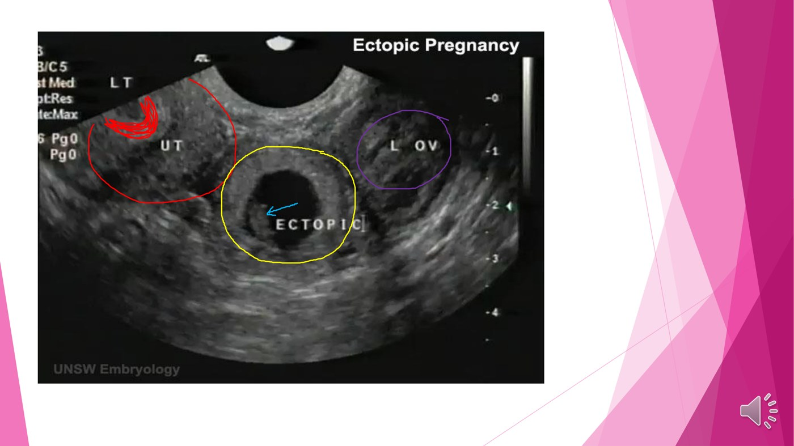
Ectopic pregnancy
Classic triad: pelvic pain + amenorrhea + vaginal bleeding. Confirm with β-hCG + TVUS. 98% are tubal.
Risk factors: pelvic infection, previous ectopic, smoking, adhesions, multiple partners, IUD in situ (see the trap).
Two kinds of pain: the tube stretching = visceral, colicky, poorly localized. Shoulder-tip = referred: blood irritating the diaphragm (phrenic, C3–C5).
| Methotrexate only if ALL of these |
|---|
| Clinically stable |
| Size under 3–4 cm |
| No fetal heartbeat |
| β-hCG under 5000 |
| Normal liver and kidney function |
| Reliable, with access to emergency care |
| Otherwise surgery: salpingectomy (remove the tube) or salpingostomy (open it, keep it) |
PID, torsion and the ruptured cyst
PID = acute infection of the upper genital tract (uterus, tubes, ovaries), ascending, community-acquired and started by a sexually transmitted agent. A pelvic infection after a procedure or pregnancy isn't PID.
Chandelier sign: extreme cervical motion tenderness. Complications: tubo-ovarian abscess and Fitz-Hugh–Curtis (perihepatic adhesions). Not responding to antibiotics? Think TOA → laparoscopy or IR drainage.
The ovary twists on its IP and utero-ovarian ligaments.
Thin-walled veins collapse; arteries keep pumping in.
The swollen ovary squeezes its own vessels harder.
Hence the clock. A big ovary (a mass) is "a weighted pendulum" and torts more easily.
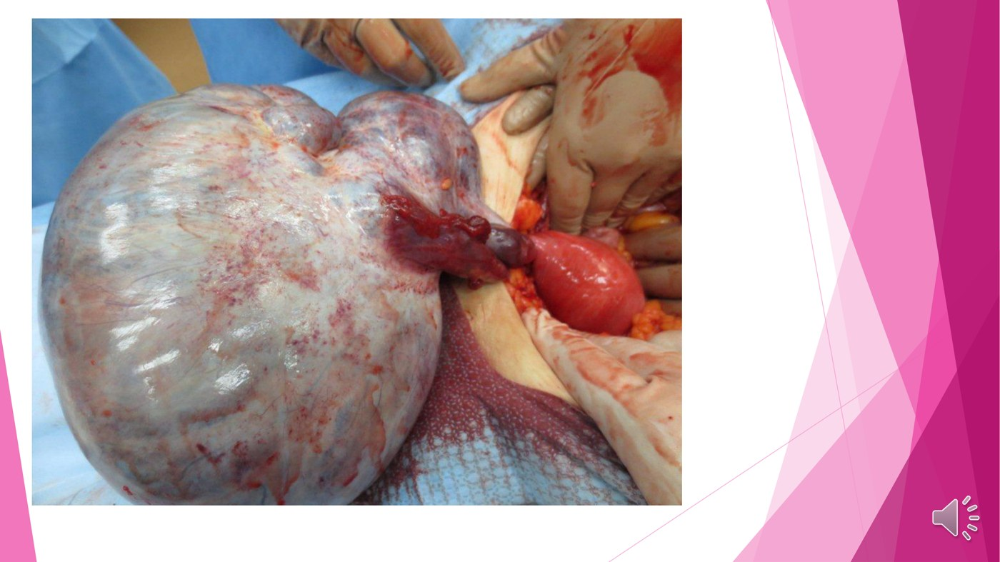
Torsion: the sheer size of the ovary is the point. Untwist, judge whether it can be saved, then work up the mass behind it (benign vs malignant). Slide from the lecture.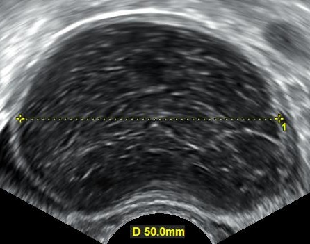
Hemorrhagic ovarian cyst on ultrasound (this one found incidentally). Rupture happens with ovulation, 2–3 weeks after the LMP, or after blunt trauma such as intercourse. Most bleed little. Prevent recurrence with ovulatory suppression, which clashes with Lisa's wish to conceive. Mikael Häggström, CC0, via Commons.Chronic Pelvic Pain & Dysmenorrhea
Why chronic pain is a different problem, the seven causes with real evidence, primary dysmenorrhea and myofascial pain.
- CPP = at least 6 months, below the umbilicus, and severe enough to cause functional disability or need treatment. All three.
- Acute pain protects; chronic pain serves no physiologic purpose. So the goal shifts from "find and fix the lesion" to less pain and better function.
- Pain intensity often doesn't match tissue damage. A normal laparoscopy doesn't make the pain less real.
- Up to half of women with CPP have experienced abuse or trauma. Take a thorough history, gently, and listen: many have seen several doctors already.
- Only 2 of the 7 best-evidenced causes are gynecologic.
- Primary dysmenorrhea = prostaglandin pain that tracks the flow, normal exam, no lab abnormality. NSAIDs and/or hormonal suppression.
| Category | The 7 evidence-backed causes |
|---|---|
| Gynecologic | Endometriosis · chronic PID |
| Urinary | Interstitial cystitis / painful bladder syndrome |
| GI | Irritable bowel syndrome |
| Musculoskeletal | Pelvic floor myalgia · myofascial pain (trigger points) |
| Neurologic | Neuralgia: iliohypogastric, ilioinguinal, genitofemoral, pudendal |
| Primary dysmenorrhea | Secondary | |
|---|---|---|
| Cause | Functional (prostaglandins) | Structural: PALE + endometriosis |
| Age | Late teens–20s, then declines | Commoner with age (lesions take years) |
| Pain | With the flow, eases as it lightens | Starts before menses, worsening, ± dyspareunia |
| Exam & labs | Normal: a clinical diagnosis | May find the lesion |
Why periods hurt, and why the two drugs work
The shedding endometrium releases prostaglandins.
NSAIDs act here: fewer prostaglandins, weaker contractions.
The myometrium cuts off its own blood supply: ischemia.
Hormonal suppression acts upstream: a thinner lining means less to shed and less prostaglandin.
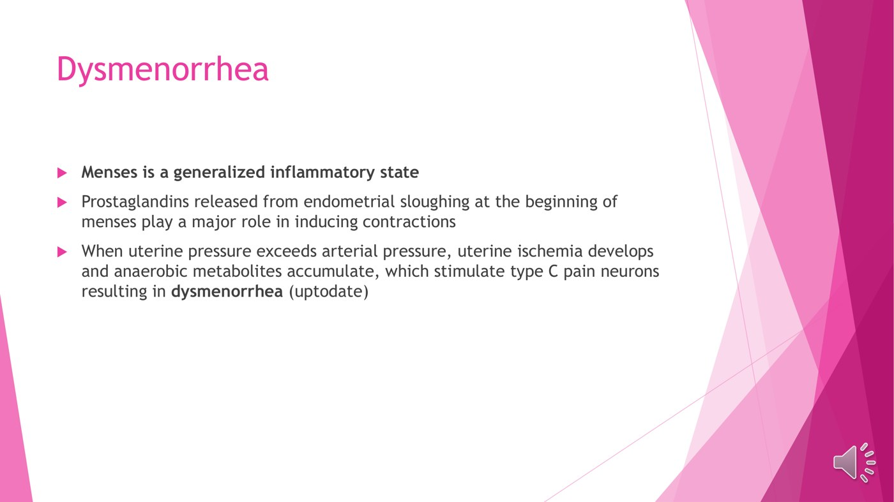
Myofascial pelvic pain: nothing to find, nothing to cut out
Mya, 23, nulliparous: 5 years of pain not tied to her cycle, regular periods, mobile uterus, no masses, a globally tender pelvis, and a speculum exam that couldn't be done. She can't work, go to school or have sex.
What it is: high resting tone in the muscles and fascia of the pelvis (levator ani, piriformis). A clinical diagnosis. It can follow gynecologic pain (endometriosis, fibroids) or arise on its own from faulty body mechanics, so treating the lesion may not fix the pain.
Often in the history: sexual abuse, poor sexual experiences, recurrent infections (yeast, UTI, PID), endometriosis.
| Treatment: a team, not an operation |
|---|
| Gynecology + physiotherapy + pain service + psychiatry/psychotherapy |
| Manual soft-tissue release (physio) is "essential" |
| Trigger-point local anaesthetic injections |
| Amitriptyline or gabapentin (neuropathic agents) |
| Goal: less pain and better function, not necessarily zero pain |
Endometriosis & Adenomyosis
Endometrium in the wrong place: outside the uterus, or deep in its wall. History, exam, treatment ladder and pathology.
- Endometriosis history: pain that starts before the period, is worst in the first days, is new or worsening, plus mid-cycle pain and deep dyspareunia. Ask about the dyspareunia: she won't raise it.
- The commonest exam finding is no finding. And disease severity doesn't match the pain, in either direction.
- Treatment = ovulatory suppression + NSAIDs. Pseudopregnancy first (CHC, Depo, LNG-IUS, Visanne); pseudomenopause (danazol, GnRH agonist) second line.
- Surgery isn't the default: lesions recur and repeat surgery adds scarring. Hysterectomy ± oophorectomy is last, once childbearing is done.
- Most women with endometriosis are not infertile. It's commoner among women who already are.
- Adenomyosis: parous, 40s, heavy periods, tender, enlarged, boggy uterus. Biopsy can't reach it, so it's found at hysterectomy, which is also its gold-standard treatment.
| Endometriosis | Adenomyosis | |
|---|---|---|
| Where the endometrium is | Outside the uterus | Deep in the myometrium |
| Typical patient | 20s–30s, often nulliparous or infertile | Around the 40s (pre- or perimenopausal), parous |
| Main symptom | Pain: dysmenorrhea, deep dyspareunia | Heavy bleeding, pain, heavy pelvic feeling |
| Exam | Uterosacral nodules, fixed uterus, adnexal mass, or nothing | Tender, enlarged, boggy uterus |
| Infertility? | Yes (adhesions block the tubes) | No |
| Hysterectomy | Last resort | Gold standard |
| Dyspareunia | Think about |
|---|---|
| Superficial (at the entrance) | Vulvodynia, atrophy, vulvar skin conditions (lichens), vaginismus |
| Deep (deep penetration) | Endometriosis, masses, adhesions, MSK causes |
| Ask in a normalizing way: "Have you ever had penetrative sexual activity?" then "Do you have pain with it?" | |
Treating endometriosis
| Step | Options | Why / catch |
|---|---|---|
| Pseudopregnancy (first line) | OCP, NuvaRing, Evra patch, Depo-Provera, LNG-IUS, Visanne (dienogest) | Anything that suppresses ovulation and thins the lining also shrinks the lesions. Plus NSAIDs for pain |
| Pseudomenopause (second line) | Danazol (testosterone derivative), Lupron / Zoladex (GnRH agonists) | Very effective, but androgenic or menopausal side effects |
| Laparoscopy | Excise or ablate lesions | For diagnosis, infertility, or refractory disease. Lesions come back; don't repeat it |
| Hysterectomy ± oophorectomy | Definitive | Last, after other options and once childbearing is complete. Not if she wants fertility-sparing care |
The pathology
Three theories: (1) implantation: retrograde menses (happens in every woman, so the host must let it implant) or a surgical implant in a C-section scar; (2) coelomic metaplasia: the peritoneum turns into endometrium; (3) vascular or lymphatic spread: the only way to explain disease above the diaphragm (catamenial pneumothorax).
Where, by gravity: ovaries → uterine ligaments → rectovaginal septum → pelvic peritoneum.
Histology: any 2 of 3: endometrial glands, endometrial stroma, hemosiderin. Late "burned-out" disease has no endometrial tissue left, so it may not be diagnosable on biopsy.
Timeline: blueberry (fresh blood) → powder burn (hemosiderin) → white puckered adhesion (fibrosis). Early pain is inflammatory, late pain mechanical. On the ovary: an endometrioma ("chocolate cyst").
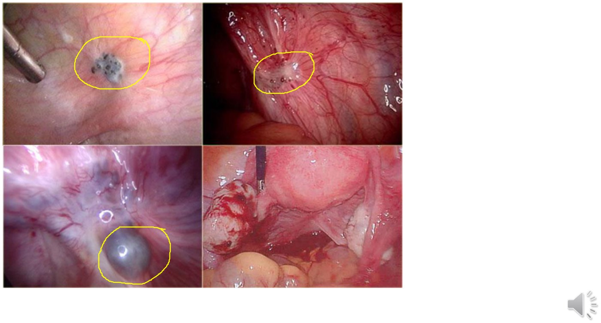
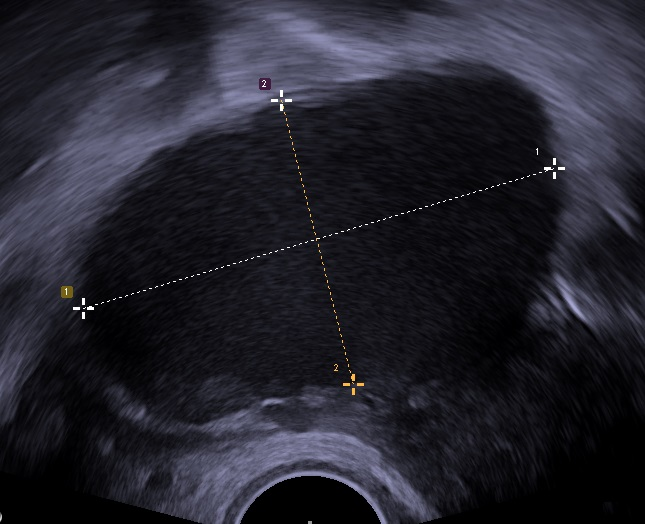
Endometrioma on transvaginal ultrasound: a cyst full of uniform, low-level echoes (old blood). Confirmed at laparoscopy. Mikael Häggström, CC0, via Commons.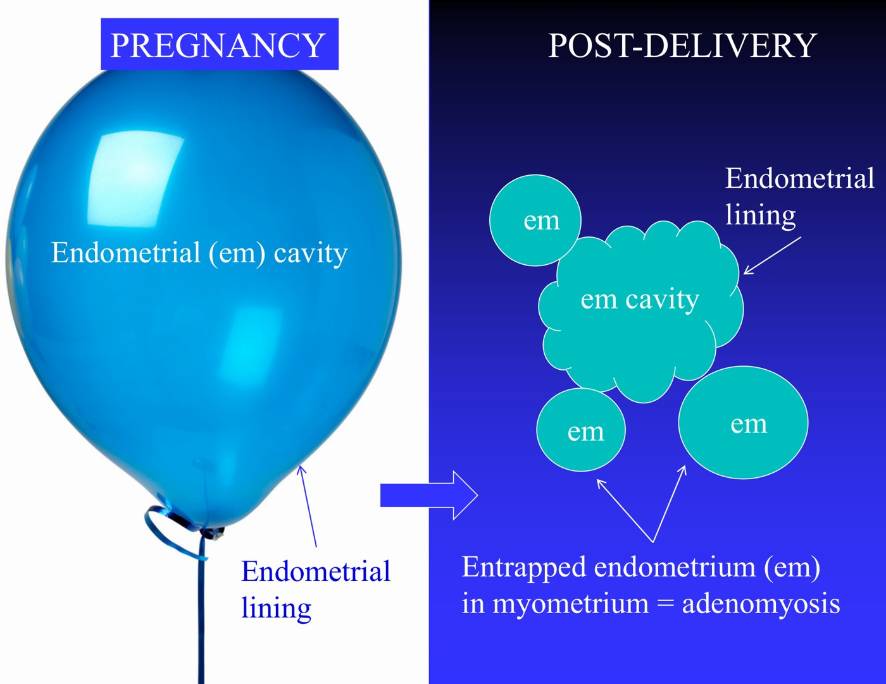
Why adenomyosis needs a pregnancy: the lining stretches like a balloon, then folds unevenly when the uterus clamps down, trapping pouches of endometrium in the wall. Slide from the lecture.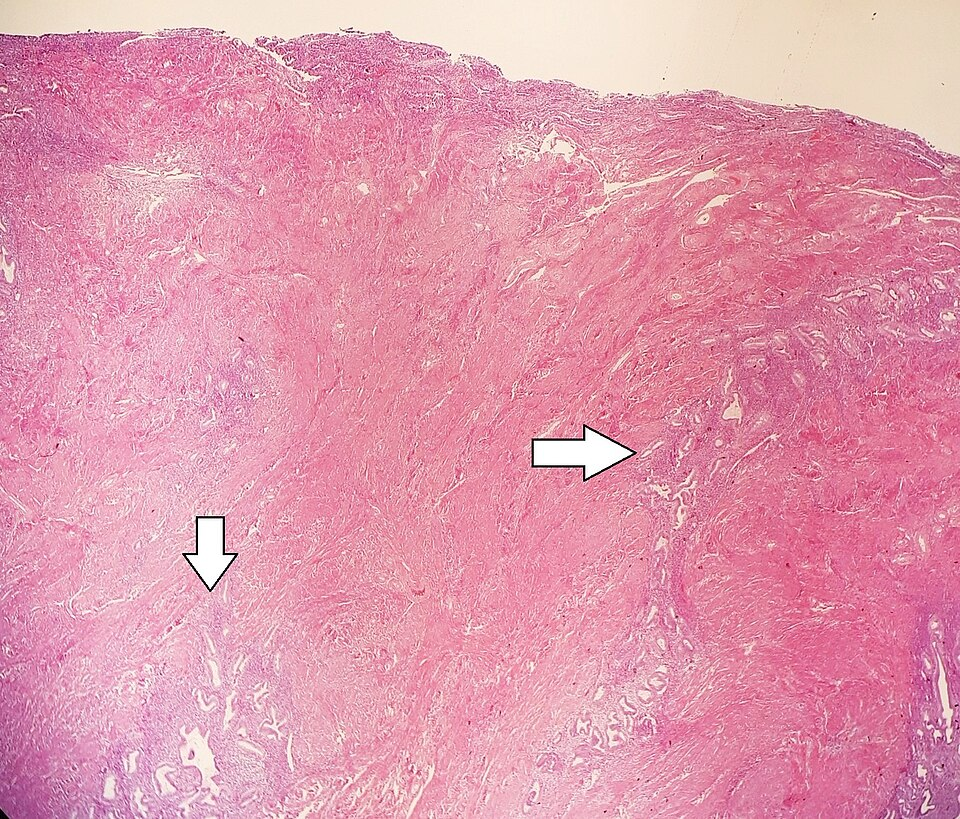
Adenomyosis under the microscope: endometrial glands (arrows) deep in the myometrium; the cavity is at the top. Too deep for a pipelle biopsy. Mikael Häggström, CC0, via Commons.Abnormal Uterine Bleeding
An approach, not a list of definitions: divide by age, PALM-COEIN, walk the HPO axis, then a treatment ladder.
- AUB = any change in frequency, duration or amount, or bleeding between cycles. Normal: every 24–38 days, up to 8 days, and not heavy enough to affect her life.
- Divide by age first: pre-pubertal · reproductive (adolescence and perimenopause are special cases) · postmenopausal (cancer until proven otherwise).
- PALM = structural, you can see it. COEIN = non-structural. Then add back what it misses: pregnancy and infection.
- Anovulation is the biggest cause. Walk the HPO axis: GnRH pulsatility (stress, weight, exercise, chronic disease) → TSH and prolactin → ovary → uterus and outflow.
- β-hCG every time, and before you put anything into a uterus. Ask about contraception by name: women don't list it as a medication.
- Two age red flags: heavy from menarche → think von Willebrand; over 40 → endometrial biopsy, even if it "looks like" perimenopause.
- Ladder: iron, NSAIDs, tranexamic acid → hormonal (CHC, Depo, LNG-IUS, Visanne, GnRH agonist) → minimally invasive → surgery. Warn her that progestins may stop her periods.
| Letter | Cause | Example |
|---|---|---|
| P | Polyp | Endometrial or endocervical outgrowth |
| A | Adenomyosis | Bulky, boggy, tender uterus |
| L | Leiomyoma | Fibroid; submucosal bleeds most |
| M | Malignancy & hyperplasia | Endometrial, cervical cancer, CIN |
| C | Coagulopathy | von Willebrand, low platelets, liver disease |
| O | Ovulatory dysfunction | Anovulation: the biggest bucket |
| E | Endometrial | Local problem in a normal-looking uterus |
| I | Iatrogenic | Contraception, anticoagulants |
| N | Not yet classified | e.g. AV malformation |
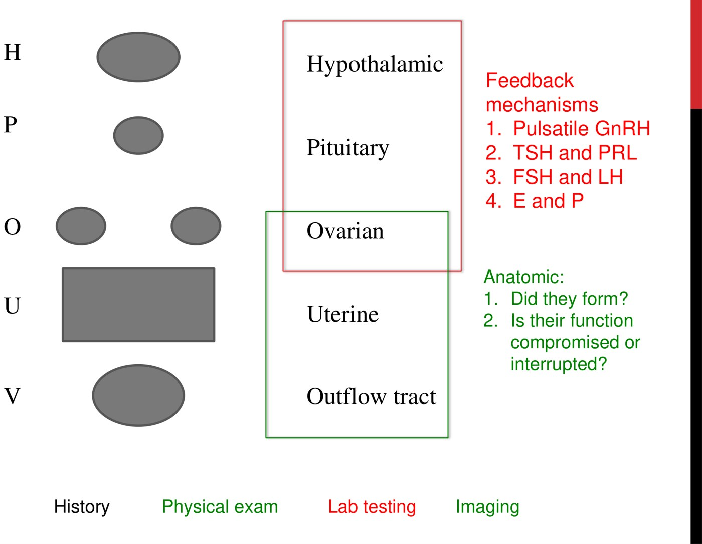
Workup: the question decides the test
| Question | Test |
|---|---|
| Pregnant? | β-hCG, first: you don't biopsy a pregnant uterus |
| Structural lesion? | Pelvic ultrasound (better than CT for the pelvis) |
| Infection or cervical disease? | Pap ± swabs (GC/CT) |
| Abnormal tissue? | Targeted biopsy of what you saw (vulva, cervix, endometrium) |
| Coagulopathy? | CBC, INR, PTT |
| HPO axis? | FSH, LH, estradiol, TSH, prolactin |
| PCOS or Cushing's? | 17-OH progesterone, androgens (only if the picture fits) |
On exam: pregnancy, adenomyosis, fibroids and cancer can all enlarge the uterus. What points to malignancy is fixation: benign enlargement stays mobile.
General look: BMI (athlete triad, anorexia, or the high BMI of PCOS and endometrial cancer), bruising or petechiae (coagulopathy), Cushingoid features, thyroid signs, galactorrhea, hirsutism and acne.
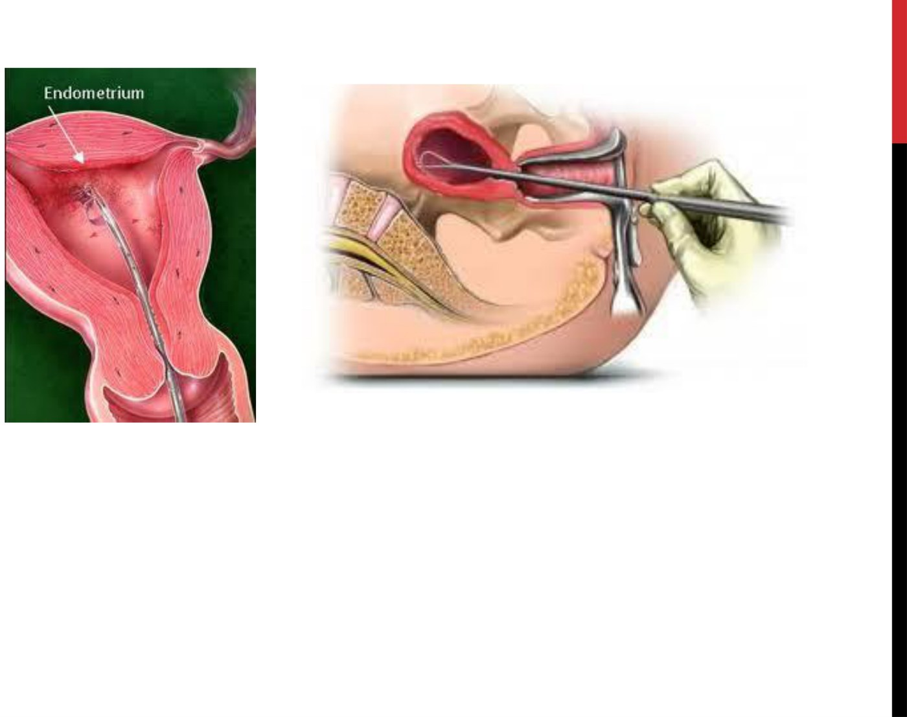
Treatment ladder
| Tier | Agents | What it does |
|---|---|---|
| Non-hormonal | Iron · NSAIDs · tranexamic acid | Less flow; doesn't fix regularity |
| Combined hormonal | Pill, patch or ring | First line for mild–moderate: less bleeding and more regular |
| Progestin only | Depo-Provera · LNG-IUS (Mirena) · Visanne | When estrogen is contraindicated. Often no periods at all: counsel first |
| GnRH agonist | Lupron | Shuts the axis off; great for acute bleeding, too many menopausal effects long term |
| Procedures | UAE, ablation · hysterectomy | After medical options |
The two age extremes, and the patient who is crashing
| Adolescent | Perimenopausal | |
|---|---|---|
| Why irregular | Immature HPO axis (about 2 years to mature) | Anovulation as ovarian function winds down |
| Don't miss | von Willebrand (heavy from the first period), pregnancy (ask alone), eating disorder / athlete triad | Malignancy: biopsy anyone over 40 |
| Treat | Mild: iron + reassurance · moderate: low-dose OCP · severe: serial Hb, coags, IV estrogen | Same ladder; try to avoid surgery |
Consider transfusion.
A Foley in the uterine cavity, inflated. The step people forget.
If no contraindication; switch to oral after 24 h.
Uncommon, but sometimes needed.
Polyps & Fibroids
The benign structural causes: what they are, where they sit, what they do, and how location and fertility decide the treatment.
- Exclude structural causes before calling bleeding functional. DUB is a diagnosis of exclusion.
- PALE = Polyp, Adenomyosis, Leiomyoma, Endometritis. Then add malignancy and baby.
- A mass at the cervical os leaves only four: polyp, leiomyoma, malignancy, baby. Adenomyosis, endometriosis and endometritis don't make masses.
- Leiomyoma = the commonest neoplasm in women, estrogen-responsive, and not pre-malignant. But a single, dominant, rapidly growing mass in a peri- or postmenopausal woman may be a sarcoma: refer urgently, don't start hormones and wait.
- Location predicts symptoms: submucosal bleeds most and causes infertility; subserosal causes mass effect; pedunculated can tort.
- Wants a pregnancy? Hysteroscopic resection (submucosal) or myomectomy. Not UAE, not hysterectomy.
- Always send the whole polyp to pathology: rarely it hides a cancer.
| Lesion | What it is |
|---|---|
| Polyp | Endometrium overgrown above the surface |
| Adenomyosis | Endometrium deep in the myometrium |
| Endometriosis | Endometrium outside the uterus |
| Leiomyoma | Not endometrium at all: smooth muscle |
| Lesion | Infertility? | How |
|---|---|---|
| Endometriosis | Yes | Adhesions bind the tubes and ovaries |
| Endometrial polyp | Yes | No room to implant if it's big |
| Leiomyoma | Yes | Distorts the cavity; also miscarriage |
| Adenomyosis | No | It usually needs a prior pregnancy |
Endometrial polyp
A benign, hormone-dependent overgrowth of endometrium, linked to estrogen and tamoxifen. Common (about a quarter of women), more so over 40, often silent.
Symptoms: AUB (commonest), infertility, and pain if it pokes through the os. Usually single; on a stalk (pedunculated) or flat (sessile).
Under the microscope: glands, fibrous stroma, and thick-walled vessels that reach the surface, which is why a traumatized polyp bleeds.
Diagnosis: endometrial biopsy or resection (biopsy can miss it or break it up). Tell her: "not a tumour, a benign growth of the lining; we'll confirm that with pathology."
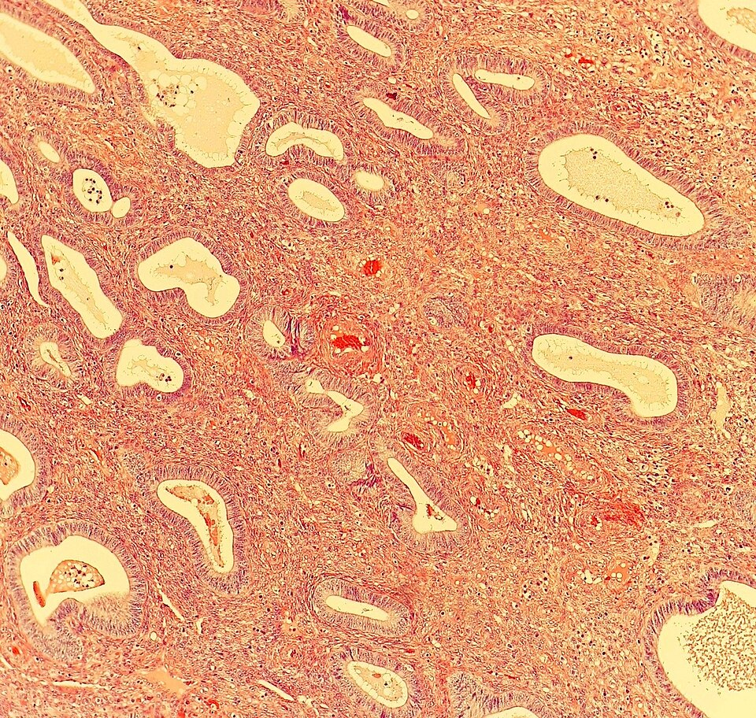
Leiomyoma (fibroid)
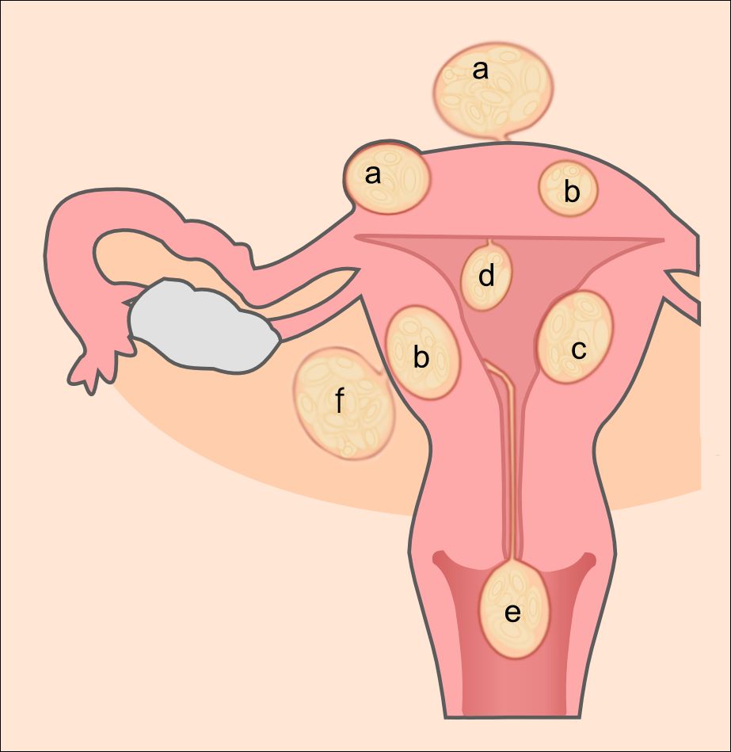
| Site | What it does |
|---|---|
| Intramural (commonest) | Bulk, mass effect, bleeding |
| Submucosal | Bleeds most; distorts the cavity (infertility); can grow a stalk and prolapse through the os, mimicking a polyp |
| Subserosal | Mass effect outward: bladder (frequency) or bowel (constipation); often incidental |
| Pedunculated | Risk of torsion |
| Broad ligament | Mistaken for an adnexal mass |
Who gets them: about half of women over 40 on imaging. More common in African American women and with obesity, early menarche and family history; smoking is linked to less risk (estrogen is the driver). They grow in pregnancy and shrink after menopause.
Symptoms: AUB first, then infertility and pregnancy loss, pain or pressure, mass effect, and pain from degeneration.
Grossly: solid, round, well circumscribed (it grows slowly and pushes), whorled, usually multiple. Microscopically: uniform smooth muscle bundles, few mitoses.
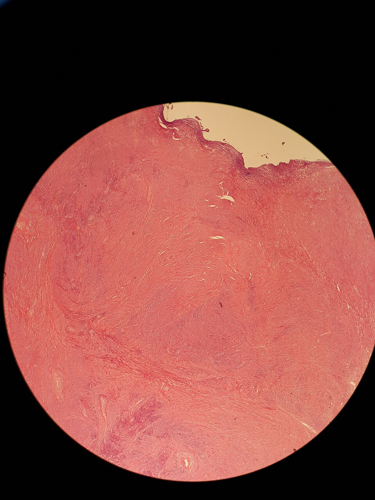
Treat by location, symptoms and fertility wishes
| Fibroid | Best treatment | Keeps fertility? |
|---|---|---|
| Submucosal / intracavitary | Hysteroscopic resection | Yes, and it removes the cause of infertility |
| Large or pedunculated | Myomectomy (laparoscopy or laparotomy) | Yes: uterus-sparing |
| Intramural, subserosal, submucosal | Uterine artery embolization | No: pregnancy after UAE isn't advised |
| Large or pedunculated | Hysterectomy | No |
| Any, for symptoms only | Continuous CHC, Depo, LNG-IUS, GnRH agonist, danazol | No: they suppress ovulation |
Drugs in Gynecology
The pharmacology under every treatment in this module: contraceptive hormones, SERMs and SPRMs, emergency contraception, NSAIDs and tranexamic acid.
- The axis needs pulsatile GnRH/LH/FSH and a timed hormone pattern. Continuous, supraphysiologic hormone breaks it: that's contraception.
- The progestin contracepts; the estrogen controls the bleeding. Estrogen alone is never a contraceptive (it would drive endometrial cancer).
- Which progestin decides the side effects: estranes and gonanes are androgenic (acne, hair); drospirenone is anti-androgenic but holds salt and potassium.
- VTE: estrogen raises clotting factors. Combined > progestin-only > nothing, and all far below pregnancy. Estrogen contraindicated? A progestin-only method usually still works.
- Tamoxifen: blocks breast, stimulates endometrium (polyps, cancer). Raloxifene: blocks both, helps bone. Clomiphene blocks hypothalamic feedback → ovulation.
- Emergency contraception: levonorgestrel up to 72 h (only delays ovulation); ulipristal up to 120 h (also blocks follicle rupture). Neither ends an established pregnancy.
- NSAIDs = less pain and less bleeding. Tranexamic acid = antifibrinolytic, better for blood loss, avoid with a clot history.
| Combined | Progestin-only pill | |
|---|---|---|
| Suppresses ovulation? | Consistently | Only about half of cycles (Depo reliably does) |
| Mainly works by | Central suppression + local effects | Local: thick cervical mucus, thin lining, slower tubes |
| Late pill | More forgiving | Over 3 h late → backup |
| Progestin family | Comes from | Side-effect flavour |
|---|---|---|
| Pregnanes | Progesterone | Most selective |
| Estranes | Testosterone | Most androgenic: acne, oily scalp, facial hair, weight |
| Gonanes | Testosterone | Androgenic, less so |
| Drospirenone | Spironolactone | Anti-androgenic (good for acne); fluid retention, high K+ |
Risks, benefits and interactions
Estrogen side effects are its physiology overdone: breast tenderness, headache (vasodilation), fluid retention, nausea, bloating. Progestin: low mood and libido, androgenic effects, breakthrough bleeding (more with progestin-only).
Serious: VTE (estrogen raises factors VII, VIII, IX, X; anti-androgenic progestins carry more risk); gallstones; a rise in breast cancer risk; less ovarian, endometrial and colorectal cancer.
Interactions: carbamazepine, rifampin and aprepitant lower estrogen levels; smoking changes its clearance. Common antibiotics don't matter.
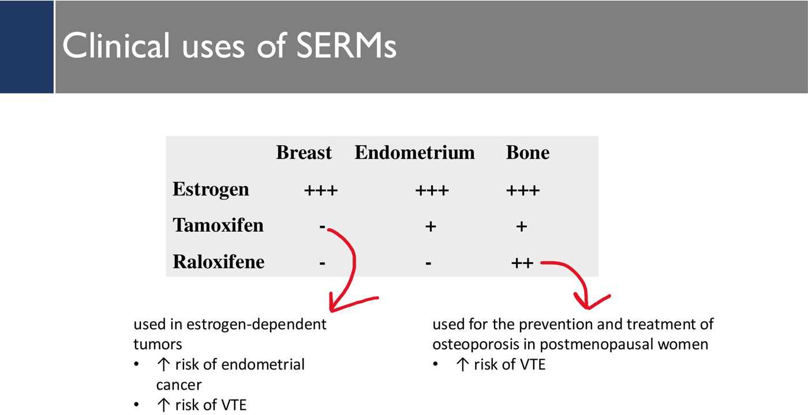
Modulators, emergency contraception and period drugs
| Drug | Does |
|---|---|
| Clomiphene | Blocks estrogen receptors in hypothalamus and pituitary → no negative feedback → FSH/LH rise → ovulation |
| Fulvestrant | Pure ER antagonist that degrades the receptor: advanced breast cancer |
| Aromatase inhibitors | Less androgen → estrogen: breast cancer, endometriosis; letrozole induces ovulation |
| Mifepristone | Mostly anti-progestin (and anti-glucocorticoid) → medical abortion |
| Ulipristal | SPRM, partial agonist: emergency contraception and fibroids |
| Flutamide · finasteride | Androgen receptor blocker · 5α-reductase inhibitor (hirsutism, BPH, alopecia) |
| NSAIDs | Tranexamic acid | |
|---|---|---|
| How | Block COX → fewer prostaglandins | Antifibrinolytic: clots aren't broken down |
| Best at | Pain (and some bleeding) | Blood loss |
| Avoid with | Renal failure, ulcer/gastritis, bleeding disorders | History of thrombosis |
| Both | Treat the symptom, not the cause; taken only on heavy days | |
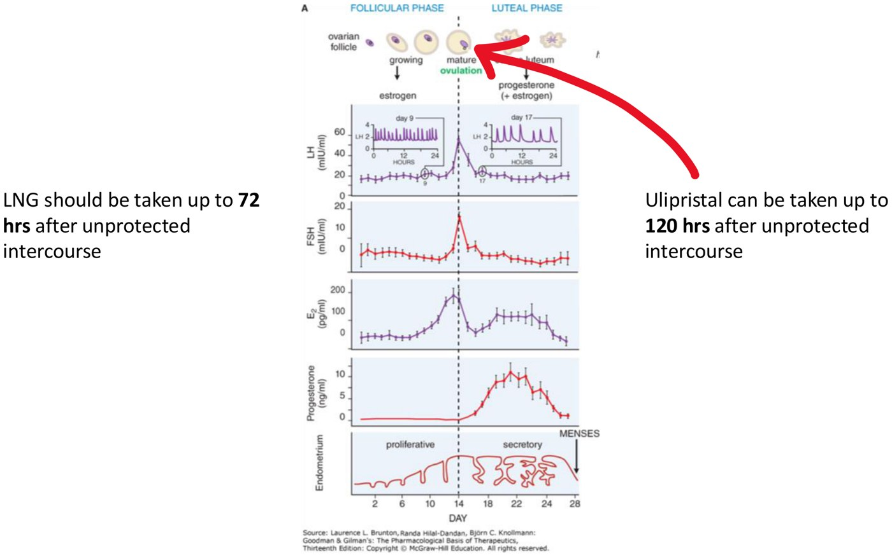
Final quiz
40 new questions, mostly clinical vignettes like the progress test. Your results compare each topic with your warm-up.